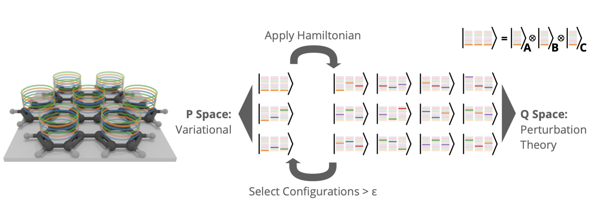

Links
Abstract
The paper presents tensor product selected configuration interaction (TPSCI), a novel method that enhances selected configuration interaction (SCI) by utilizing local molecular structures to reduce the number of SCI variables. By grouping orbitals into clusters and employing many-particle cluster states instead of Slater determinants, TPSCI achieve s significant computational efficiency and accuracy. The method is particularly effective when cluster states are defined using Tucker decomposition of the SCI vector.
